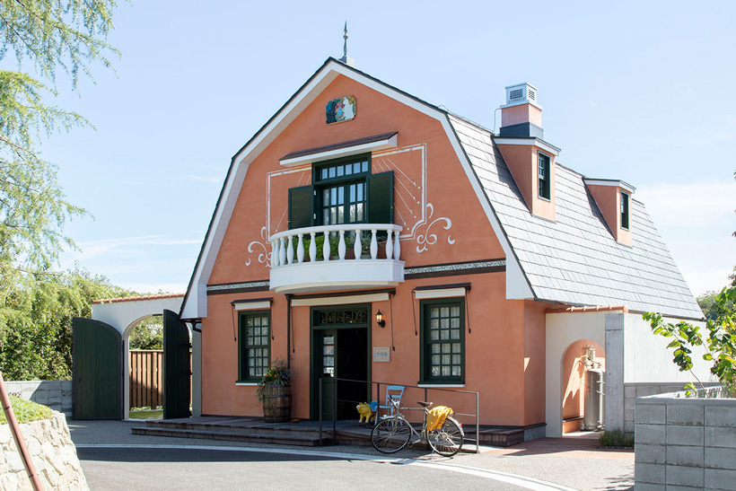

ジブリパーク
地図を見る
冒険案内デスク
エリアを選んで、地図で見つける
行き先を選ぶ
5つのエリアを巡ろう
森の奥に広がる5つの場所。それぞれに、少しずつ違う物語の空気が流れています。 気になるエリアのカードから、地図でその場所を確かめてみましょう。
写真：ジブリパーク公式サイト
地図
エリアマップ
現在の表示
5つのエリアを見渡す
地図と連動
01 / 05
地図が表示されない場合は、index.html末尾のGoogle Maps APIキーが 有効か（利用制限・割り当て上限などを含めて）ご確認ください。
旅の見どころ
エリアくわしくガイド
ここから先は、旅行記のように少していねいなガイド。 気になるエリアをタップして、開いてみてください。
▼ 青春の丘
モチーフになっている作品：『耳をすませば』『猫の恩返し』
特徴：丘の上に広がる、少し背伸びした青春の匂いがするエリア。石畳の坂道や小さな広場が続きます。
見どころ：「地球屋」と「ロータリー広場」、外から眺める「猫の事務所」、実際に利用できる「エレベーター塔」で構成されています。
おすすめポイント：坂道が多いエリアなので、歩きやすい靴で。夕方の光が差し込む時間帯は特に絵になります。
▼ ジブリの大倉庫
特徴：屋内施設で、スタジオジブリ作品の世界を体験できる仕掛けや遊び場が集約されています。
見どころ：貴重な資料の展示や、映画の世界に入り込んだような仕掛け、カフェ・ショップも完備。雨の日でも楽しめます。
おすすめポイント：展示が多く見応えがあるため、旅のスケジュールには余裕を持って組み込むのがおすすめです。
▼ どんどこ森
モチーフになっている作品：『となりのトトロ』
特徴：木々に囲まれた、森そのものを歩いて楽しむエリアです。
見どころ：「サツキとメイの家」があり、山頂への階段を登ると、子どもだけが入れる木製遊具「どんどこ堂」が待っています。
おすすめポイント：山道になっているため、少し歩く覚悟で。登り切った先の眺めは、旅の途中のご褒美のような場所です。
▼ もののけの里
モチーフになっている作品：『もののけ姫』
特徴：エミシの村をイメージした、里山の風景が広がるエリア。
見どころ：タタラ場をモチーフにした体験施設や、タタリ神・乙事主のオブジェが点在しています。
おすすめポイント：自然の起伏をそのまま活かした造りなので、四季の変化も一緒に楽しめます。
▼ 魔女の谷
モチーフになっている作品：『魔女の宅急便』『ハウルの動く城』『アーヤと魔女』
特徴：ヨーロッパ風の街並みが広がる、5エリアの中でも特に物語性の強いエリア。
見どころ：「オキノ邸」「ハウルの城」「魔女の家」などの建物のほか、ショップ、レストラン、乗り物遊具があります。
おすすめポイント：5エリアの中で最も新しく整備された区画。旅の最後に立ち寄ると、良い締めくくりになります。

アクセス
ジブリパークへの行き方
所在地
愛知県長久手市（愛・地球博記念公園内）
電車でのアクセス
愛知高速交通 東部丘陵線「リニモ」「愛・地球博記念公園」駅下車すぐ。 愛知環状鉄道でもジブリパーク仕様のラッピング電車が運行しています。
バスでのアクセス
名古屋駅（名鉄バスセンター4階24番のりば）から 「愛・地球博記念公園（ジブリパーク）」行きが運行しています。 中部国際空港からのアクセスバスもあります。
車でのアクセス
ジブリパークには専用駐車場がありません。公共交通機関の利用が推奨されています。 やむを得ず車で訪れる場合は、隣接する愛・地球博記念公園の駐車場情報を、 事前に公式サイトでご確認ください。
営業時間・料金・チケットについて
仮テキスト（要確認）
営業時間・料金・チケットの購入方法は変更されることがあるため、
このページには正確な数値を記載していません。
ご来園前に必ずジブリパーク公式サイトで最新情報をご確認ください。